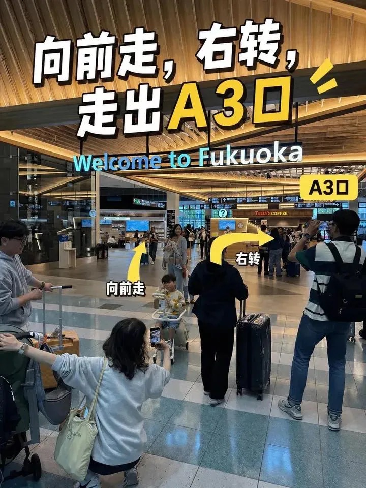
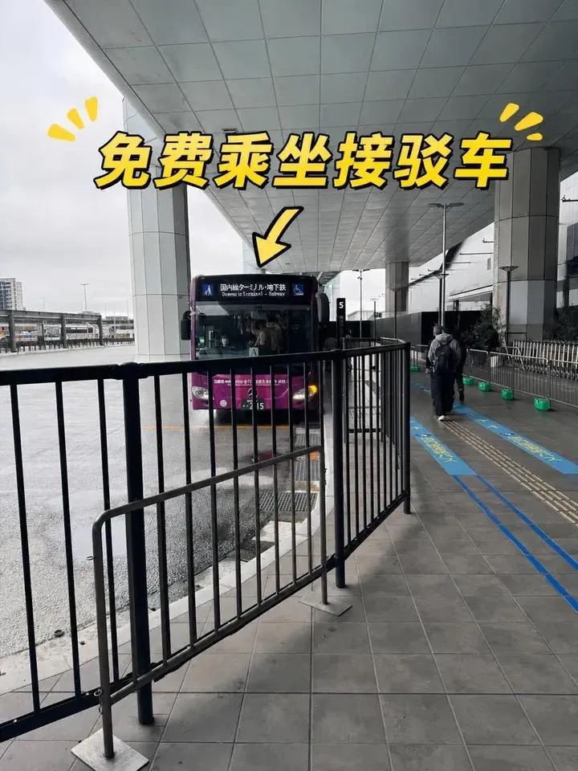

DAY 01
週五 · 12/25
抵達福岡 · 燒肉 × 屋台深夜
CI116 19:35 落地 → 天神南森林 check-in → 燒肉／鐵板燒／一口餃子／沾麵／屋台 擇一


19:35
機場（接駁車）→ 博多駅（地鐵）→ 渡辺通駅
A3 出口搭免費接駁車到國內線，搭地鐵空港線到博多駅，轉七隈線到渡辺通駅（3 站），出站步行約 5 分到住宿。
20:00
–21:00
–21:00
Check-in — 天神南森林
放行李輕裝出發，住宿資訊見下方「住宿」。
✅ 已跟住宿方確認可以晚到入住，預計 20:00–21:00 辦理，在現場櫃台領鑰匙
21:30
晚餐／消夜（擇一）
- 🥩 藥院燒肉 NIKUICHI在地人愛去的燒肉激戰區，和牛品質高、價格實在；回住宿搭七隈線 1 站到渡辺通，或步行約 12 分。📅 需提前約 1 個月訂位 — Maps 訂位 ↗ 備案：肉の山翔 ↗ ／ 肉屋肉一 ↗
- 🍳 鉄板焼酒場 いくら（天神今泉）人氣鐵板燒居酒屋，常排隊；今泉，西鐵天神站步行約 3 分。晚上 18:00–24:00（L.O. 23:00），不定休，可網路訂位 Maps ↗ 食べログ ↗
- 🥟 博多一口餃子 たけとら（今泉店）博多名物一口煎餃，手工餃子皮；今泉，天神南駅步行約 3 分。15:00–翌 5:00，可網路訂位 Maps ↗ 食べログ ↗
- 🍜 麵屋兼虎（天神本店）濃厚魚介豚骨沾麵；渡辺通 4 丁目，天神南駅步行約 3 分。營業到 22:00，22:00 前要排進隊伍 Maps ↗ 食べログ ↗
- 🍜 天神 · 中洲屋台露天食攤一字排開，點碗豚骨拉麵配生啤。推薦 屋台 小金ちゃん ↗：炒拉麵元祖，約 18:15–24:00（週五、六到翌 1:00），週四、日休
🛒 除了屋台，吃完都可以順路逛西鐵超市（レガネットマルシェ 藥院店），23:00 關門：NIKUICHI 走過去約 4 分，いくら、たけとら、兼虎約 8 分；逛完步行約 10 分回住宿 Maps ↗
🍜 必吃
- 博多豚骨拉麵 屋台版，細麵白湯
- 屋台關東煮 冬天暖身
💡 提醒
- 住宿在渡辺通駅旁，七隈線 3 站直達博多駅、1 站到天神南，後幾天都從這出發
- 今晚輕鬆，明天 Day2 要早起
- 博多站 B1 有置物櫃，晚到可先寄行李


.jpg?width=400)